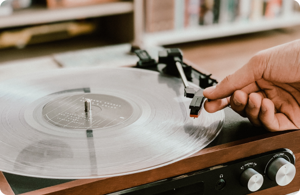
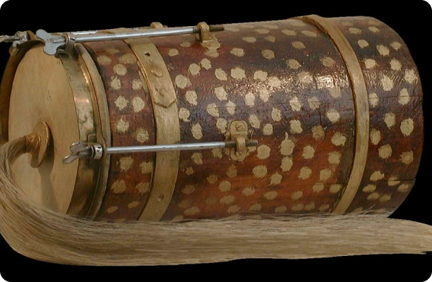

 9 вересня о 12:56 Культура вінілу в Україні. Що з вінілом відбувається сьогодні? Сьогодення Вініл Дослідження
 1 вересня о 10:56 Бугай – то український інструмент Історія Дослідження Класика Інструменти Народна творчість
3 вересня о 14:00 Традиційні святкові пісні України: маланки, щедрівки, колядки Відео Народна творчість